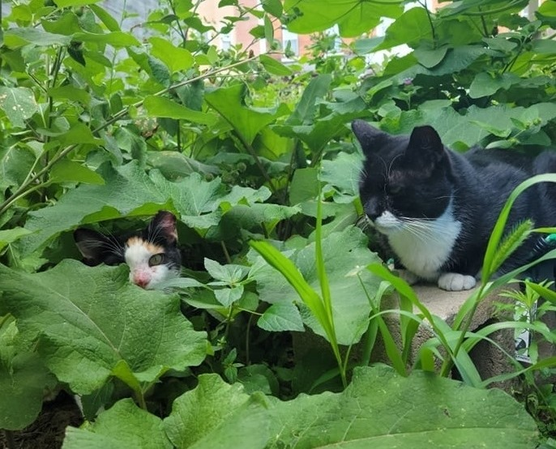
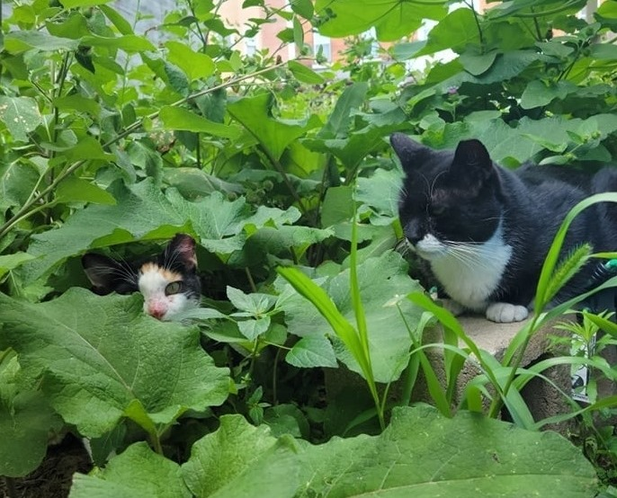

What is a Community Cat?
“‘Community Cats’ is a term used to describe outdoor, unowned, free-roaming cats. These cats could be friendly, feral, adults, kittens, healthy, sick, altered and/or unaltered. They may or may not have a caregiver. By this definition, the only outdoor free-roaming cats who are not community cats are those who have an owner.” -ASPCA in ‘A Closer Look at Community Cats’
Types of Cats
Lost & Found Cats


These cats are typically very friendly, and therefore are someone’s missing pet cat. Lost cats will sometimes have flyers in the area,
including shelters and rescues. Found cats are cats found outdoors that are friendly. Found cats can be someone’s lost pet,
and therefore any found cat that is friendly needs to be checked for a microchip,
and flyers should be put out. However, sometimes found cats will not be claimed...
Abandoned & Friendly Stray Cats
When a found cat isn’t claimed, it is assumed to be abandoned. When this happens, the cat needs to be fostered and medically
evaluated to check that it is healthy, and eradicate any parasites that could have come from living outside.
Alternatively, it can be surrendered to a rescue, which will accept on a case by case basis based on rescue space and resources.
If it is medically urgent, aka pregnant or injured, it can be surrendered to ACCT immediately.
Feral Cats
These cats are often born outside, afraid of humans, and are undomesticated. They are not friendly enough to ever do well as someone’s pet, and need to be maintained outdoors.
Colony Cats

Cats that are regularly seen on a street are often maintained by a colony. A colony is a location where there is food, water, and potentially shelter.
The cats in a colony usually are fixed, evident by an ear tip. The ear tip is discussed more in the TNR section(include hyperlink).
Colony cats can be any of the above types. Ferals and friendly strays are typically regulars of a colony, and therefore when a new cat appears, it is lost or abandoned.